In this workflow, we demonstrate the use of RIVM-toolbox for common microbiome data analytics. We use the data from Fuentes S, et al. (2021) Associations of faecal microbiota with influenza-like illness in participants aged 60 years or older: an observational study. The Lancet Healthy Longevity, 2(1):e13-23.
Initiate the analysis by loading the RIVM-Toolbox ( biomeUtils, biomeViz and biomeStats) and other handy external R packages.
# RIVM toolbox
library(biomeUtils)
library(biomeViz)
library(biomeStats)
# External
library(ggplot2)
library(patchwork)
library(dplyr)
library(microbiome)
library(ggsignif)Theme for data visualization.
## change global theme settings (for all following plots)
theme_set(theme_biomViz(base_size = 12))Load the example data.
ps <- FuentesIliGutData# Check main comparison variable.
ps %>% getSampleTibble() %>%
dplyr::count(ILI)## # A tibble: 3 x 2
## ILI n
## <fct> <int>
## 1 C 184
## 2 L1 213
## 3 L2 192There are 184 controls, 213 ILI samples from visit-1 and 192 ILI samples after recovery visit-2.
Before starting detailed analysis, it is important to check and explore the data.
Here, we explore basic sample and ASVs features.
qc_Data <- calculateQC(ps)
qc_Data## $SampleQC
## # A tibble: 589 x 4
## Samples sample_total_taxa sample_total_reads number_taxa_account_fifty_per~
## <chr> <dbl> <dbl> <int>
## 1 sample_1 259 15237 11
## 2 sample_2 291 18970 16
## 3 sample_3 336 21161 16
## 4 sample_4 355 17754 20
## 5 sample_5 300 25724 11
## 6 sample_6 374 33815 14
## 7 sample_7 251 13810 15
## 8 sample_8 273 22730 15
## 9 sample_9 279 22706 15
## 10 sample_10 219 15521 9
## # ... with 579 more rows
##
## $TaxaQC
## # A tibble: 905 x 9
## taxa taxa_counts taxa_mean_counts taxa_stdev_counts taxa_cv taxa_rank
## <chr> <dbl> <dbl> <dbl> <dbl> <dbl>
## 1 ASV302 13913 23.6 47.3 2.00 648
## 2 ASV636 4063 6.90 27.4 3.97 462
## 3 ASV500 6223 10.6 45.0 4.26 535
## 4 ASV7 784128 1331. 1652. 1.24 899
## 5 ASV2617 311 0.528 1.50 2.84 45
## 6 ASV148 40396 68.6 224. 3.26 765
## 7 ASV196 24796 42.1 137. 3.26 724
## 8 ASV2699 294 0.499 1.81 3.63 40.5
## 9 ASV109 60088 102. 303. 2.97 798
## 10 ASV1472 907 1.54 3.62 2.35 229
## # ... with 895 more rows, and 3 more variables: taxa_dectected_samples <dbl>,
## # taxa_prevalence <dbl>, percent_of_total <dbl>We would like to check if there is some association between sequencing depth with number of ASVs we detect.
sample_qc <- qc_Data$SampleQC
sample_qc %>%
ggplot(aes(sample_total_taxa, sample_total_reads)) +
geom_point(alpha=0.25) +
labs(x="No. of ASVs", y = "No. of reads",
subtitle = "No. of ASVs vs No. of reads")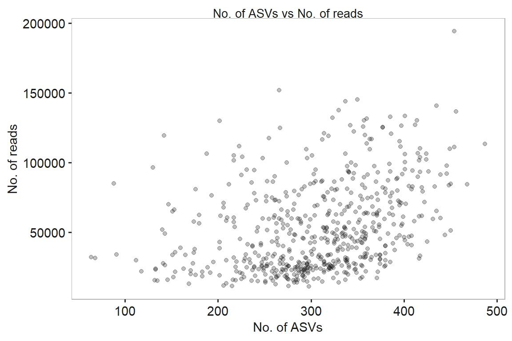
Next we check some features of ASVs.
taxa_qc <- qc_Data$TaxaQC
p1 <- taxa_qc %>%
ggplot(aes(taxa_prevalence , taxa_mean_counts)) +
geom_point(alpha=0.25) +
labs(x = "Prevalence of ASVs", y = "Mean counts of ASVs",
subtitle = "Prevalence vs Mean Counts")
p2 <- taxa_qc %>%
ggplot(aes(taxa_cv , taxa_mean_counts)) +
geom_point(alpha=0.25) +
labs(x = "C.V ASVs", y = "Mean counts of ASVs",
subtitle = "Coeficient of Variation vs Mean Counts")
p3 <- taxa_qc %>%
ggplot(aes(taxa_cv , taxa_prevalence)) +
geom_point(alpha=0.25) +
labs(x = "C.V ASVs", y = "Prevalence",
subtitle = "Coeficient of Variation vs Prevalence")
p1 | p2 | p3 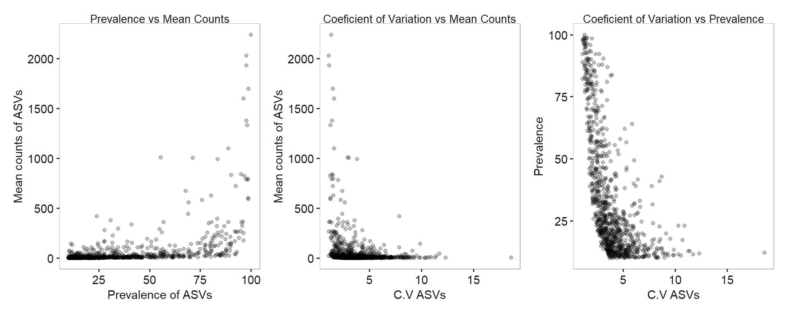
These plots indicate a common feature of microbiome sequencing studies. ASVs with lower prevalence and abundances tend to have high variation (noisy ASVs). Several of the downstream analysis can be affected by these ASVs.
Check if the more abundance-prevalent ASVs have better taxonomic assignments.
p1 <- trendAbundanceAssignment(ps,
quantiles = seq(0, 95, by = 5),
plot=TRUE)
p1 + ggplot2::scale_colour_brewer("", palette = "Set2") +
ggplot2::theme(axis.text.x = element_text(angle=90, vjust=0.5)) +
labs(subtitle = "Trend in abundance and taxonomic assignment")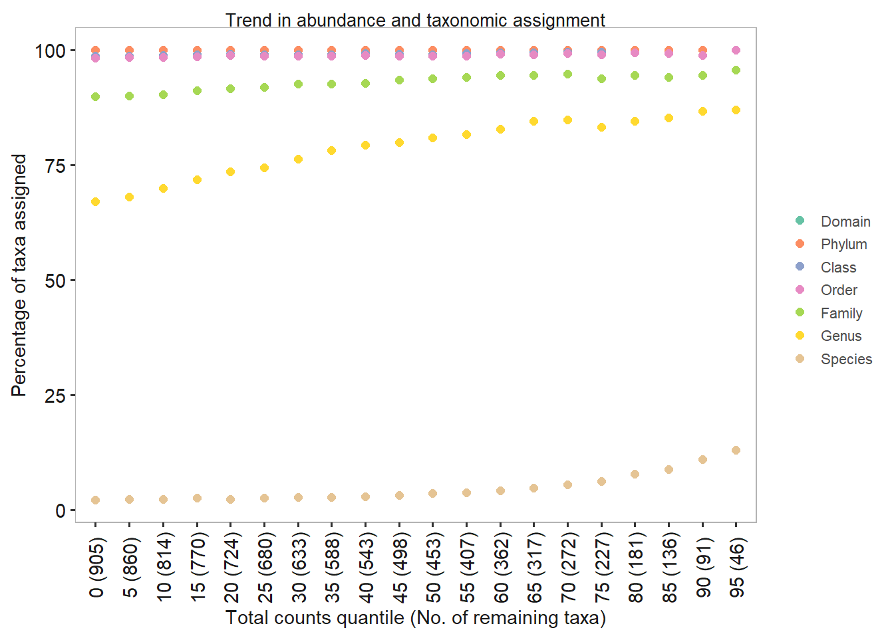 Check taxonomic assignments of ASVs.
summarizeTaxonomicAssignments(ps)## In Species column- 0 are ambigous assignments## # A tibble: 7 x 4
## Ranks TaxonomyAssigned Total PrecentAssigned
## <chr> <int> <int> <dbl>
## 1 Domain 905 905 100
## 2 Phylum 905 905 100
## 3 Class 894 905 98.8
## 4 Order 890 905 98.3
## 5 Family 814 905 89.9
## 6 Genus 606 905 67
## 7 Species 19 905 2.1Now check the taxonomic assignments of ASVs.
Useful to check this before aggregating at any level.
polydf <- checkPolyphyletic(ps)
polydf## # A tibble: 6 x 7
## # Groups: Genus [3]
## Domain Phylum Class Order Family Genus nfeatures
## <chr> <chr> <chr> <chr> <chr> <chr> <int>
## 1 Bacteria Firmicutes Clostridia Clostridiales Lachnospiraceae Eubact~ 2
## 2 Bacteria Firmicutes Clostridia Clostridiales Lachnospiraceae Clostr~ 2
## 3 Bacteria Firmicutes Clostridia Clostridiales Lachnospiraceae Rumino~ 2
## 4 Bacteria Firmicutes Clostridia Clostridiales Ruminococcaceae Rumino~ 2
## 5 Bacteria Firmicutes Clostridia Clostridiales Eubacteriaceae Eubact~ 2
## 6 Bacteria Firmicutes Clostridia Clostridiales Ruminococcaceae Clostr~ 2We notice that Eubacterium, Clostridium, and Ruminococcus can be detected in different families. These taxa are known as polyphyletic and taxonomic resolution is unclear.
When taxonomic assignments are done following dada2, we have genus and species columns. These can be combine as genus.species.
# Extract tax_table as tibble last three cols to demonstrate this
getTaxaTibble(ps)[,6:8]## # A tibble: 905 x 3
## Family Genus Species
## <chr> <chr> <chr>
## 1 Lachnospiraceae Lachnospiraceae NC2004 group <NA>
## 2 Ruminococcaceae Ruminococcaceae UCG-013 <NA>
## 3 Ruminococcaceae <NA> <NA>
## 4 Lachnospiraceae Fusicatenibacter saccharivorans
## 5 Ruminococcaceae <NA> <NA>
## 6 Ruminococcaceae <NA> <NA>
## 7 Lachnospiraceae Roseburia <NA>
## 8 Ruminococcaceae Butyricicoccus <NA>
## 9 Rikenellaceae Alistipes <NA>
## 10 Ruminococcaceae Oscillibacter <NA>
## # ... with 895 more rowsUnite genus and species columns.
ps <- uniteGenusSpeciesNames(ps)
# check
getTaxaTibble(ps)[,6:8]## # A tibble: 905 x 3
## Family Genus Species
## <chr> <chr> <chr>
## 1 Lachnospiraceae Lachnospiraceae NC2004 group <NA>
## 2 Ruminococcaceae Ruminococcaceae UCG-013 <NA>
## 3 Ruminococcaceae <NA> <NA>
## 4 Lachnospiraceae Fusicatenibacter Fusicatenibacter.saccharivorans
## 5 Ruminococcaceae <NA> <NA>
## 6 Ruminococcaceae <NA> <NA>
## 7 Lachnospiraceae Roseburia <NA>
## 8 Ruminococcaceae Butyricicoccus <NA>
## 9 Rikenellaceae Alistipes <NA>
## 10 Ruminococcaceae Oscillibacter <NA>
## # ... with 895 more rowsSimilarly, one can combine two columns in sample data.
# Extract tax_table as tibble last three cols to demonstrate this
getSampleTibble(ps)[,6:8]## # A tibble: 589 x 3
## sex age ILI
## <fct> <dbl> <fct>
## 1 M 72 C
## 2 F 71 C
## 3 F 66 C
## 4 F 70 C
## 5 M 69 L1
## 6 M 70 C
## 7 F 67 L1
## 8 M 81 C
## 9 F 78 C
## 10 F 68 L1
## # ... with 579 more rowsps <- uniteSampleColumn(ps,
"united.column", sex:age,
sep= ":",
remove = FALSE)
getSampleTibble(ps)[,6:8]## # A tibble: 589 x 3
## united.column sex age
## <chr> <fct> <dbl>
## 1 M:72 M 72
## 2 F:71 F 71
## 3 F:66 F 66
## 4 F:70 F 70
## 5 M:69 M 69
## 6 M:70 M 70
## 7 F:67 F 67
## 8 M:81 M 81
## 9 F:78 F 78
## 10 F:68 F 68
## # ... with 579 more rowsObtain a summary of ASVs by Phylum.
getTaxaSummary(ps, rank="Phylum")## # A tibble: 10 x 3
## Phylum Counts Percent
## <chr> <int> <dbl>
## 1 Firmicutes 23934274 76.3
## 2 Bacteroidetes 4845579 15.5
## 3 Proteobacteria 810484 2.58
## 4 Actinobacteria 630148 2.01
## 5 Verrucomicrobia 590273 1.88
## 6 Euryarchaeota 492906 1.57
## 7 Tenericutes 38848 0.124
## 8 Cyanobacteria 4694 0.0150
## 9 Lentisphaerae 4306 0.0137
## 10 Synergistetes 2775 0.00885We would like to compare phylogenetic diversity between these groups.
ps.rare <- rarefy_even_depth(ps, rngseed = 1579)## `set.seed(1579)` was used to initialize repeatable random subsampling.## Please record this for your records so others can reproduce.## Try `set.seed(1579); .Random.seed` for the full vector## ...# all samples at specific depth
sample_sums(ps.rare)[1:10]## sample_1 sample_2 sample_3 sample_4 sample_5 sample_6 sample_7 sample_8
## 10975 10975 10975 10975 10975 10975 10975 10975
## sample_9 sample_10
## 10975 10975Calculate phylogenetic diversity.
# this will calcualte PD and add a new column in phyloseq object.
ps <- calculatePD(ps.rare, justDF = FALSE)
# we can visualize this with biomeViz::plotByGroup
biomeViz::plotByGroup(ps,
x.factor="ILI",
y.numeric = "PD") +
geom_point(aes(color=ILI),
position = position_jitter(width = 0.1),
alpha=0.25) +
scale_color_manual(values=c("steelblue", "brown3", "grey70")) +
scale_fill_manual(values=c("steelblue", "brown3", "grey70"))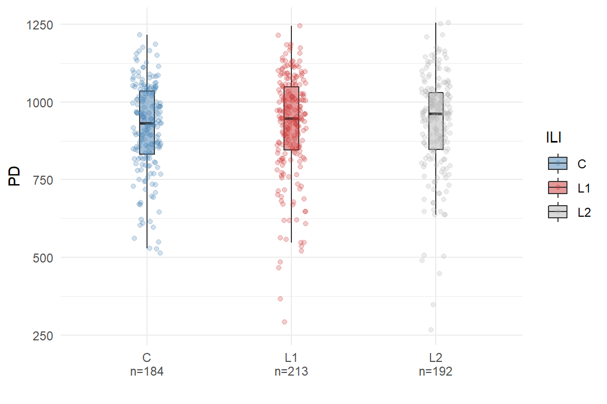 We can also see if there is any relationship between PD and age.
getSampleTibble(ps) %>%
ggplot(aes(PD, age)) +
geom_point(alpha=0.25) +
labs(x = "PD", y = "Age",
subtitle = "PD vs Age") +
ggpubr::stat_cor(method = "spearman") +
geom_smooth(method = "lm")## `geom_smooth()` using formula 'y ~ x'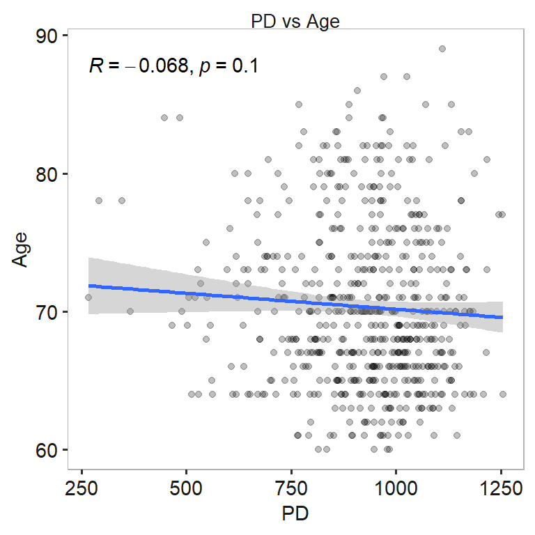
We can also calculate other diversity indices from microbiome R pkg and add it to the our phyloseq data.
For this we use biomeUtils::mutateSampleData() function in combination with microbiome::diversity function.
ps <- mutateSampleData(ps,
Shannon = microbiome::diversity(ps, "shannon")[,1])
plotByGroup(ps,
x.factor="ILI",
y.numeric = "Shannon") +
geom_point(aes(color=ILI),
position = position_jitter(width = 0.1),
alpha=0.25) +
theme_biomViz() +
scale_color_manual(values=c("steelblue", "brown3", "grey70")) +
scale_fill_manual(values=c("steelblue", "brown3", "grey70"))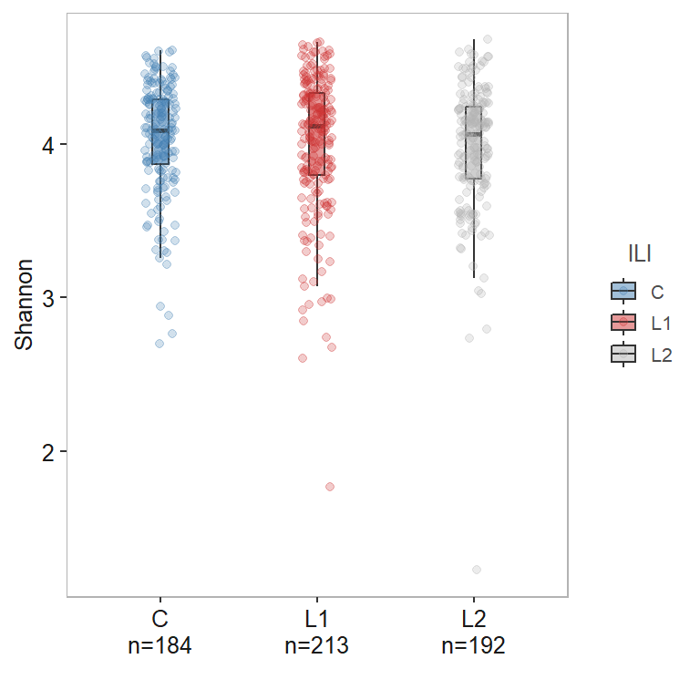
A Principal Coordinates Analysis for phyloseq object. To visualize similarities/dissimilarities between samples in 2D ordination. This function extends the phyloseq ordination plots to include taxa that correlate with chosen axis and plots them along with a side boxplot for comparing inter-sample variation within groups.
library(biomeUtils)
library(dplyr)
library(ggside)## Warning: package 'ggside' was built under R version 4.1.1## Registered S3 method overwritten by 'ggside':
## method from
## +.gg ggplot2ps <- FuentesIliGutData %>%
microbiome::transform("compositional") %>%
mutateTaxaTable(FeatureID = taxa_names(FuentesIliGutData))
plotPCoA(x =ps,
group_var = "ILI",
ord_method = "PCoA",
dist_method = "bray",
seed = 1253,
cor_method = "spearman",
verbose = TRUE,
padj_cutoff = 0.05,
padj_method = "fdr",
arrows = TRUE,
label_col = "grey30",
plot_centroids = TRUE,
add_side_box = TRUE,
axis_plot = c(1:2),
point_shape = 21, # point_shape
point_alpha = 0.5) +
theme_biomViz() +
scale_color_manual(values = c("#3d6721", "#a86826", "#006c89")) +
scale_fill_manual(values = c("#3d6721", "#a86826", "#006c89"))## Random number for permutation analysis ...
## 1253## Warning in .check_taxa_axis(axis.a.tax, axis.b.tax): Second of the choosen axis
## in `axis_plot` has no taxa satisfying criteria to plot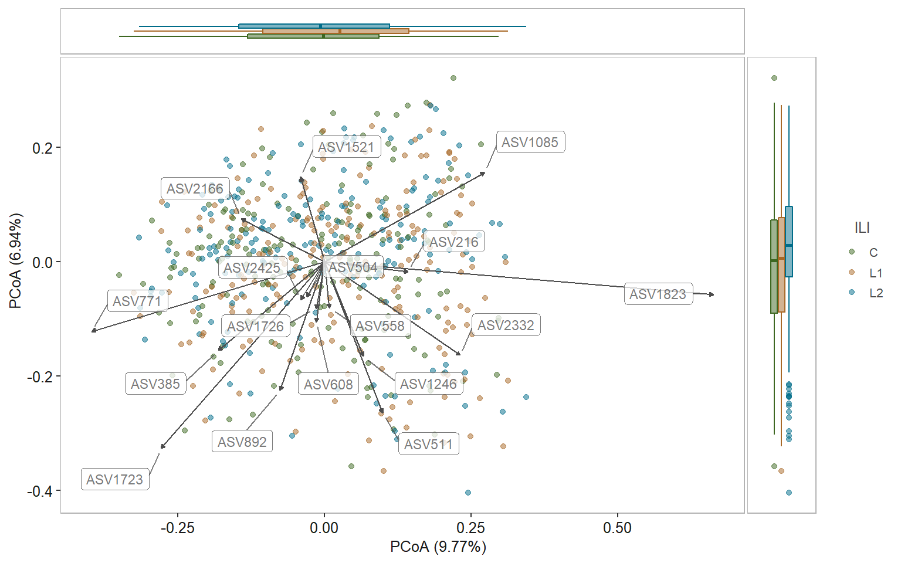
plotTopAbundant(FuentesIliGutData,
taxa_level = "Family",
top=10,
alpha = 0.25,
shape = 124,
color="black",
fill = "black",
size=3,
width = 0.02) +
theme_biomViz()## Joining, by = "taxa"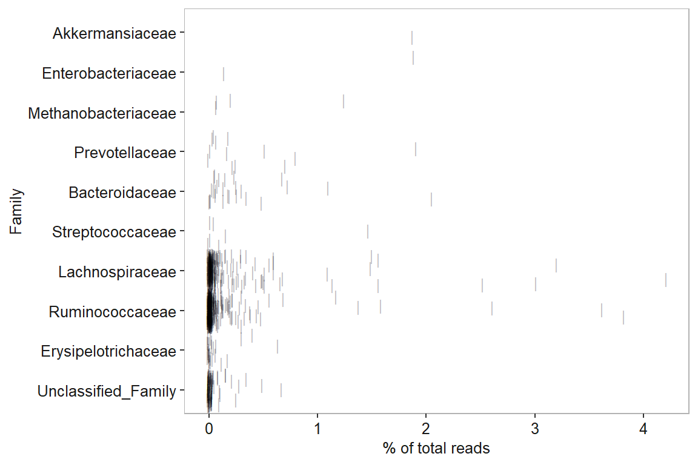
Most ASVs are within Lachnospiraceae, and Ruminococcaceae. These are know abundant families in human gut.
Heatmap is useful to visualize patterns in abundances of taxa. Here, we compare abundance profiles of top 10 ASVs.
ps.rel <- FuentesIliGutData %>%
microbiome::transform("compositional")
select_taxa <- findTopTaxa(ps.rel, top= 10, method="mean")
plotTidyHeatmap(ps.rel, select_taxa = select_taxa,
group_samples_by = "ILI",
add_taxa_label = TRUE,
cluster_rows = FALSE,
.scale = "none",
transform = NULL)## Registered S3 method overwritten by 'dendextend':
## method from
## rev.hclust vegan## tidyHeatmap says: (once per session) from release 1.2.3 the grouping labels have white background by default. To add color for one-ay grouping specify palette_grouping = list(c("red", "blue"))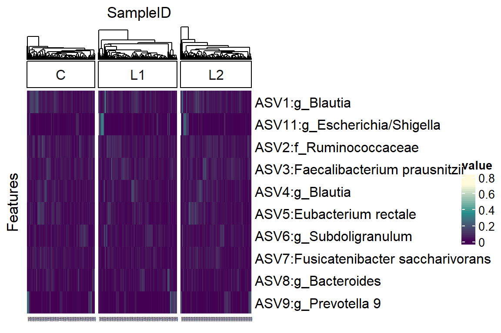
ASV11 Escherichia/Shigella is abundant in some samples from ILI group.
Check prevalence of top ASVs.
prev_tib <- getPrevalence(ps.rel,
return_rank = c("Family", "Genus"),
return_taxa = select_taxa,
sort = TRUE)
prev_tib## Taxa prevalence Family Genus
## 1 ASV1 1.0000000 Lachnospiraceae Blautia
## 2 ASV4 0.9881154 Lachnospiraceae Blautia
## 3 ASV7 0.9813243 Lachnospiraceae Fusicatenibacter
## 4 ASV6 0.9779287 Ruminococcaceae Subdoligranulum
## 5 ASV2 0.9779287 Ruminococcaceae <NA>
## 6 ASV3 0.9779287 Ruminococcaceae Faecalibacterium
## 7 ASV5 0.9626486 Lachnospiraceae Eubacterium
## 8 ASV8 0.8879457 Bacteroidaceae Bacteroides
## 9 ASV11 0.8353141 Enterobacteriaceae Escherichia/Shigella
## 10 ASV9 0.5551783 Prevotellaceae Prevotella 9ps.gen <- ps %>%
microbiome::aggregate_taxa("Genus") %>%
microbiome::transform("clr")
# Select taxa and group to compare
plotTaxaRaincloud(ps.gen,
taxa =c("Blautia", "Bacteroides", "Faecalibacterium","Prevotella 9"),
group_samples_by = "ILI",
opacity = 0.25,
shape_point = 21) +
scale_color_manual(values=c("steelblue", "brown3", "grey70")) +
scale_fill_manual(values=c("steelblue", "brown3", "grey70")) +
labs(x="ILI", y = "Abundance (CLR)") +
theme(strip.text = element_text(face="italic"))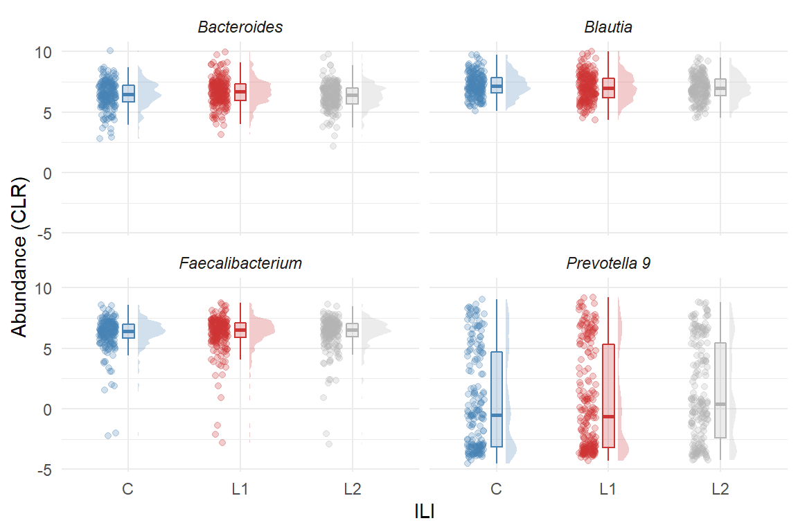
At present, Kruskal-Wallis and Wilcox Test are stably available in the biomeStats package.
When more than two groups are present, we use a non-parametric Kruskal-Wallis test to identify significantly different ASVs.
ps.rel <- microbiome::aggregate_taxa(ps, "Genus") %>%
microbiome::transform("compositional")
ps.rel <- core(ps.rel, detection=0.001, prevalence=50/100)
kw_results <- doKruskalWallisTest(ps.rel,
sample_group = "ILI",
adj_method = "BH",
effect_size = TRUE) %>%
dplyr::filter(p.adj <= 0.05)## Using Comparison as id variables## Joining, by = c("variable", ".y.", "n")print(kw_results)## # A tibble: 4 x 12
## variable .y. n statistic df p method p.adj p.adj.signif
## <chr> <chr> <int> <dbl> <int> <dbl> <chr> <dbl> <chr>
## 1 Parabacteroid~ value 589 17.1 2 1.93e-4 Krusk~ 0.00965 **
## 2 Bacteria_Firm~ value 589 12.1 2 2.31e-3 Krusk~ 0.0289 *
## 3 Fusicatenibac~ value 589 12.8 2 1.67e-3 Krusk~ 0.0278 *
## 4 Ruminococcus 1 value 589 13.8 2 1.02e-3 Krusk~ 0.0255 *
## # ... with 3 more variables: effsize <dbl>, effsize_method <chr>,
## # magnitude <chr>Four genera, Parabacteroides, Fusicatenibacter, Ruminococcus 1 and Eubacterium (Lachnospiraceae) are significantly different.
Compare thier abundances between groups.
# We use CLR abundances to visualize
ps.clr <- microbiome::aggregate_taxa(ps, "Genus") %>%
microbiome::transform("clr")
plotTaxaRaincloud(ps.clr,
taxa =kw_results$variable,
group_samples_by = "ILI",
opacity = 0.5,
shape_point = 21) +
scale_color_manual(values=c("steelblue", "brown3", "grey70")) +
scale_fill_manual(values=c("steelblue", "brown3", "grey70")) +
labs(x="ILI", y = "Abundance (CLR)", subtitle = "Significantly different genera") +
theme(strip.text = element_text(face="italic"))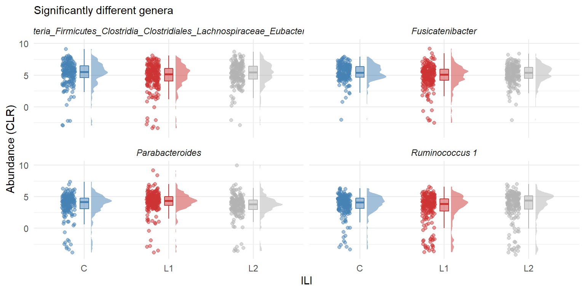
Within the ILI group, there are participants who had given samples at two visits. We use select these participants.
two.vis.part <- filterSampleData(ps, ILI != "C") %>%
getSampleTibble() %>%
count(participant_id) %>%
filter(n == 2) %>%
pull(participant_id)
ps <- mutateSampleData(ps, two.visits = ifelse(participant_id %in%two.vis.part,
"Yes", "No"))
ps.paired.ili <- filterSampleData(ps, two.visits == "Yes")
ps.paired.ili.rel <- microbiome::aggregate_taxa(ps.paired.ili, "Genus") %>%
microbiome::transform("compositional")
ps.paired.ili.rel <- core(ps.paired.ili.rel, detection=0.001, prevalence=50/100)
wilcox_results <- doWilcoxTest(ps.paired.ili.rel,
sample_group = "ILI",
paired = TRUE,
adj_method = "BH",
alternative = "greater") %>%
dplyr::filter(p.adj <= 0.05)## Using Comparison as id variableswilcox_results## # A tibble: 3 x 10
## variable .y. group1 group2 n1 n2 statistic p p.adj p.adj.signif
## <fct> <chr> <chr> <chr> <int> <int> <dbl> <dbl> <dbl> <chr>
## 1 Bactero~ value L1 L2 192 192 11620 0.00112 0.0258 *
## 2 Parabac~ value L1 L2 192 192 11769 0.00058 0.0258 *
## 3 Bacteri~ value L1 L2 192 192 11400 0.0028 0.0429 *Compare their abundances between groups.
Bacteroides
# We use CLR abundances to visualize
ps.paired.ili.clr <- microbiome::aggregate_taxa(ps.paired.ili, "Genus") %>%
microbiome::transform("compositional")
# raincloud
bac.ab.plot <- plotTaxaRaincloud(ps.paired.ili.clr,
taxa = "Bacteroides",
group_samples_by = "ILI",
opacity = 0.5,
shape_point = 21) +
scale_color_manual(values=c("brown3", "grey70")) +
scale_fill_manual(values=c("brown3", "grey70")) +
labs(x="", y = "Relative abundance ", subtitle = "Bacteroides") +
theme(strip.text = element_text(face="italic"),
plot.subtitle = element_text(face="italic"))
# Prevalence
bac.prev.l1 <- microbiome::aggregate_taxa(ps.paired.ili, "Genus") %>%
filterSampleData(ILI=="L1") %>%
getPrevalence(return_taxa = "Bacteroides", return_rank = "Genus") %>%
pull(prevalence)
bac.prev.l2 <- microbiome::aggregate_taxa(ps.paired.ili, "Genus") %>%
filterSampleData(ILI=="L2") %>%
getPrevalence(return_taxa = "Bacteroides", return_rank = "Genus") %>%
pull(prevalence)
bac.tib <- tibble(Genus=c("Bacteroides","Bacteroides"),
prev = c(bac.prev.l1,bac.prev.l2),
group = c("L1", "L2"))
bac.prev.plot <- bac.tib %>%
ggplot(aes(group, prev)) +
geom_col(aes(fill=group), width = 0.5,
alpha=0.5) +
scale_fill_manual(values=c("brown3", "grey70")) +
labs(x="", y = "", subtitle = "Prevalence") +
scale_y_continuous(position = "right") +
theme(legend.position = "none")Parabacteroides
parabac.ab.plot <- plotTaxaRaincloud(ps.paired.ili.clr,
taxa = "Parabacteroides",
group_samples_by = "ILI",
opacity = 0.5,
shape_point = 21) +
scale_color_manual(values=c("brown3", "grey70")) +
scale_fill_manual(values=c("brown3", "grey70")) +
labs(x="", y = "Relative abundance ", subtitle = "Parabacteroides") +
theme(strip.text = element_text(face="italic"),
plot.subtitle = element_text(face="italic"))
# Prevalence
parbac.prev.l1 <- microbiome::aggregate_taxa(ps.paired.ili, "Genus") %>%
filterSampleData(ILI=="L1") %>%
getPrevalence(return_taxa = "Parabacteroides", return_rank = "Genus") %>%
pull(prevalence)
parbac.prev.l2 <- microbiome::aggregate_taxa(ps.paired.ili, "Genus") %>%
filterSampleData(ILI=="L2") %>%
getPrevalence(return_taxa = "Parabacteroides", return_rank = "Genus") %>%
pull(prevalence)
parabac.tib <- tibble(Genus=c("Parabacteroides","Parabacteroides"),
prev = c(parbac.prev.l1,parbac.prev.l2),
group = c("L1", "L2"))
parabac.tib.plot <- parabac.tib %>%
ggplot(aes(group, prev)) +
geom_col(aes(fill=group), width = 0.5,
alpha=0.5) +
scale_fill_manual(values=c("brown3", "grey70")) +
labs(x="", y = "", subtitle = "Prevalence") +
scale_y_continuous(position = "right") +
theme(legend.position = "none")To add p-values to the plot, we can use ggsignif.
# get comparisons
comparsions.list <- as.character(unique(bac.ab.plot$data$ILI))
# bacteroides
get_pval_bac <- wilcox_results %>%
filter(variable == "Bacteroides")
bac.ab.plot <- bac.ab.plot +
ggsignif::geom_signif(
comparisons = list(comparsions.list),
y_position = max(bac.ab.plot$data$Abundance)+0.05, tip_length = 0.03, vjust = 0.2,
annotation = get_pval_bac$p.adj.signif,
color= "grey30",
textsize = 3)
# parabacteroides
get_pval_parabac <- wilcox_results %>%
filter(variable == "Parabacteroides")
parabac.ab.plot <- parabac.ab.plot +
ggsignif::geom_signif(
comparisons = list(comparsions.list),
y_position = max(parabac.ab.plot$data$Abundance)+0.05, tip_length = 0.03, vjust = 0.2,
annotation = get_pval_parabac$p.adj.signif,
color= "grey30",
textsize = 3)Combine plots.
(bac.ab.plot + bac.prev.plot + plot_layout(widths = c(8,1)))/ (parabac.ab.plot + parabac.tib.plot + plot_layout(widths = c(8,1)))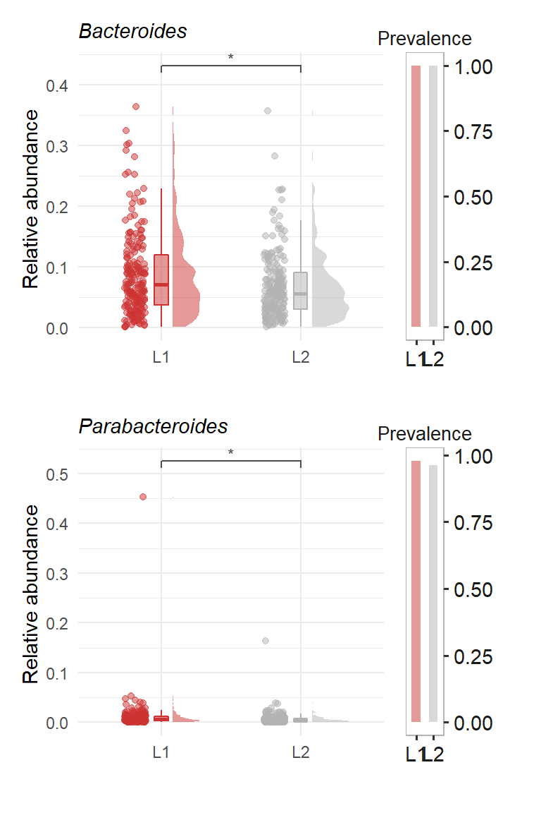
devtools::session_info()## - Session info ---------------------------------------------------------------
## setting value
## version R version 4.1.0 (2021-05-18)
## os Windows 10 x64
## system x86_64, mingw32
## ui RTerm
## language (EN)
## collate English_United States.1252
## ctype English_United States.1252
## tz Europe/Berlin
## date 2021-11-16
##
## - Packages -------------------------------------------------------------------
## ! package * version date lib
## abind 1.4-5 2016-07-21 [1]
## ade4 1.7-16 2020-10-28 [1]
## ape 5.5 2021-04-25 [1]
## assertthat 0.2.1 2019-03-21 [1]
## backports 1.2.1 2020-12-09 [1]
## Biobase 2.51.0 2021-03-09 [1]
## BiocGenerics 0.38.0 2021-05-19 [1]
## biomeStats * 00.00.04 2021-10-20 [1]
## biomeUtils * 0.014 2021-11-14 [1]
## biomeViz * 0.0.03 2021-10-18 [1]
## biomformat 1.20.0 2021-05-19 [1]
## Biostrings 2.59.4 2021-05-16 [1]
## bit 4.0.4 2020-08-04 [1]
## bit64 4.0.5 2020-08-30 [1]
## bitops 1.0-7 2021-04-24 [1]
## blob 1.2.2 2021-07-23 [1]
## broom 0.7.9 2021-07-27 [1]
## bslib 0.3.1 2021-10-06 [1]
## cachem 1.0.5 2021-05-15 [1]
## Cairo 1.5-12.2 2020-07-07 [1]
## callr 3.7.0 2021-04-20 [1]
## car 3.0-11 2021-06-27 [1]
## carData 3.0-4 2020-05-22 [1]
## cellranger 1.1.0 2016-07-27 [1]
## circlize 0.4.13 2021-06-09 [1]
## cli 3.0.1 2021-07-17 [1]
## clue 0.3-59 2021-04-16 [1]
## cluster 2.1.2 2021-04-17 [2]
## codetools 0.2-18 2020-11-04 [2]
## coin 1.4-2 2021-10-08 [1]
## colorspace 2.0-1 2021-05-04 [1]
## ComplexHeatmap 2.8.0 2021-05-19 [1]
## crayon 1.4.1 2021-02-08 [1]
## curl 4.3.2 2021-06-23 [1]
## data.table 1.14.0 2021-02-21 [1]
## DBI 1.1.1 2021-01-15 [1]
## DECIPHER 2.20.0 2021-05-19 [1]
## dendextend 1.15.1 2021-05-08 [1]
## desc 1.4.0 2021-09-28 [1]
## devtools 2.4.2 2021-06-07 [1]
## digest 0.6.27 2020-10-24 [1]
## distributional 0.2.2 2021-02-02 [1]
## doParallel 1.0.16 2020-10-16 [1]
## dplyr * 1.0.6 2021-05-05 [1]
## ellipsis 0.3.2 2021-04-29 [1]
## evaluate 0.14 2019-05-28 [1]
## fansi 0.4.2 2021-01-15 [1]
## farver 2.1.0 2021-02-28 [1]
## fastmap 1.1.0 2021-01-25 [1]
## fastmatch 1.1-3 2021-07-23 [1]
## forcats 0.5.1 2021-01-27 [1]
## foreach 1.5.1 2020-10-15 [1]
## foreign 0.8-81 2020-12-22 [2]
## fs 1.5.0 2020-07-31 [1]
## generics 0.1.0 2020-10-31 [1]
## GenomeInfoDb 1.28.4 2021-09-05 [1]
## GenomeInfoDbData 1.2.6 2021-05-20 [1]
## GetoptLong 1.0.5 2020-12-15 [1]
## ggdist 3.0.0 2021-07-19 [1]
## gghalves 0.1.1 2020-11-08 [1]
## ggplot2 * 3.3.5 2021-06-25 [1]
## ggpubr 0.4.0 2020-06-27 [1]
## ggrepel 0.9.1 2021-01-15 [1]
## ggside * 0.1.2 2021-07-21 [1]
## ggsignif * 0.6.3 2021-09-09 [1]
## GlobalOptions 0.1.2 2020-06-10 [1]
## glue 1.4.2 2020-08-27 [1]
## gridExtra 2.3 2017-09-09 [1]
## gtable 0.3.0 2019-03-25 [1]
## haven 2.4.3 2021-08-04 [1]
## highr 0.9 2021-04-16 [1]
## hms 1.1.1 2021-09-26 [1]
## htmltools 0.5.2 2021-08-25 [1]
## igraph 1.2.6 2020-10-06 [1]
## IRanges 2.25.11 2021-05-05 [1]
## iterators 1.0.13 2020-10-15 [1]
## jquerylib 0.1.4 2021-04-26 [1]
## jsonlite 1.7.2 2020-12-09 [1]
## knitr 1.36 2021-09-29 [1]
## labeling 0.4.2 2020-10-20 [1]
## lattice 0.20-44 2021-05-02 [2]
## libcoin 1.0-9 2021-09-27 [1]
## lifecycle 1.0.1 2021-09-24 [1]
## magrittr 2.0.1 2020-11-17 [1]
## MASS 7.3-54 2021-05-03 [2]
## Matrix 1.3-3 2021-05-04 [2]
## matrixStats 0.61.0 2021-09-17 [1]
## memoise 2.0.0 2021-01-26 [1]
## mgcv 1.8-35 2021-04-18 [2]
## microbiome * 1.14.0 2021-05-19 [1]
## modeltools 0.2-23 2020-03-05 [1]
## multcomp 1.4-17 2021-04-29 [1]
## multtest 2.47.0 2021-03-08 [1]
## munsell 0.5.0 2018-06-12 [1]
## mvtnorm 1.1-3 2021-10-08 [1]
## nlme 3.1-152 2021-02-04 [2]
## openxlsx 4.2.4 2021-06-16 [1]
## patchwork * 1.1.1 2020-12-17 [1]
## permute 0.9-5 2019-03-12 [1]
## phangorn 2.7.1 2021-07-13 [1]
## phyloseq * 1.36.0 2021-05-19 [1]
## picante 1.8.2 2020-06-10 [1]
## pillar 1.6.3 2021-09-26 [1]
## pkgbuild 1.2.0 2020-12-15 [1]
## pkgconfig 2.0.3 2019-09-22 [1]
## pkgload 1.2.3 2021-10-13 [1]
## plyr 1.8.6 2020-03-03 [1]
## png 0.1-7 2013-12-03 [1]
## prettyunits 1.1.1 2020-01-24 [1]
## processx 3.5.2 2021-04-30 [1]
## progress 1.2.2 2019-05-16 [1]
## ps 1.6.0 2021-02-28 [1]
## purrr 0.3.4 2020-04-17 [1]
## quadprog 1.5-8 2019-11-20 [1]
## R6 2.5.1 2021-08-19 [1]
## RColorBrewer 1.1-2 2014-12-07 [1]
## Rcpp 1.0.7 2021-07-07 [1]
## RCurl 1.98-1.3 2021-03-16 [1]
## readr 2.0.2 2021-09-27 [1]
## readxl 1.3.1 2019-03-13 [1]
## remotes 2.4.1 2021-09-29 [1]
## reshape2 1.4.4 2020-04-09 [1]
## rhdf5 2.35.5 2021-05-10 [1]
## D rhdf5filters 1.3.5 2021-04-30 [1]
## Rhdf5lib 1.13.7 2021-05-07 [1]
## rio 0.5.27 2021-06-21 [1]
## rjson 0.2.20 2018-06-08 [1]
## rlang 0.4.11 2021-04-30 [1]
## rmarkdown 2.11 2021-09-14 [1]
## rprojroot 2.0.2 2020-11-15 [1]
## RSQLite 2.2.8 2021-08-21 [1]
## rstatix 0.7.0 2021-02-13 [1]
## rstudioapi 0.13 2020-11-12 [1]
## Rtsne 0.15 2018-11-10 [1]
## S4Vectors 0.29.19 2021-05-06 [1]
## sandwich 3.0-1 2021-05-18 [1]
## sass 0.4.0 2021-05-12 [1]
## scales 1.1.1 2020-05-11 [1]
## sessioninfo 1.1.1 2018-11-05 [1]
## shape 1.4.6 2021-05-19 [1]
## stringi 1.6.2 2021-05-17 [1]
## stringr 1.4.0 2019-02-10 [1]
## survival 3.2-11 2021-04-26 [2]
## testthat 3.1.0 2021-10-04 [1]
## TH.data 1.1-0 2021-09-27 [1]
## tibble 3.1.2 2021-05-16 [1]
## tidyHeatmap 1.3.1 2021-07-07 [1]
## tidyr 1.1.3 2021-03-03 [1]
## tidyselect 1.1.1 2021-04-30 [1]
## tzdb 0.1.2 2021-07-20 [1]
## usethis 2.1.0 2021-10-16 [1]
## utf8 1.2.1 2021-03-12 [1]
## vctrs 0.3.8 2021-04-29 [1]
## vegan 2.5-7 2020-11-28 [1]
## viridis 0.6.2 2021-10-13 [1]
## viridisLite 0.4.0 2021-04-13 [1]
## withr 2.4.2 2021-04-18 [1]
## xfun 0.23 2021-05-15 [1]
## XVector 0.31.1 2021-03-08 [1]
## yaml 2.2.1 2020-02-01 [1]
## zip 2.2.0 2021-05-31 [1]
## zlibbioc 1.37.0 2021-03-09 [1]
## zoo 1.8-9 2021-03-09 [1]
## source
## CRAN (R 4.1.0)
## CRAN (R 4.1.0)
## CRAN (R 4.1.0)
## CRAN (R 4.1.0)
## CRAN (R 4.1.0)
## Bioconductor
## Bioconductor
## Github (RIVM-IIV-Microbiome/biomeStats@b500880)
## local
## local
## Bioconductor
## Bioconductor
## CRAN (R 4.1.0)
## CRAN (R 4.1.0)
## CRAN (R 4.1.0)
## CRAN (R 4.1.1)
## CRAN (R 4.1.1)
## CRAN (R 4.1.1)
## CRAN (R 4.1.0)
## CRAN (R 4.1.0)
## CRAN (R 4.1.0)
## CRAN (R 4.1.1)
## CRAN (R 4.1.0)
## CRAN (R 4.1.0)
## CRAN (R 4.1.1)
## CRAN (R 4.1.1)
## CRAN (R 4.1.1)
## CRAN (R 4.1.0)
## CRAN (R 4.1.0)
## CRAN (R 4.1.1)
## CRAN (R 4.1.0)
## Bioconductor
## CRAN (R 4.1.0)
## CRAN (R 4.1.1)
## CRAN (R 4.1.0)
## CRAN (R 4.1.0)
## Bioconductor
## CRAN (R 4.1.1)
## CRAN (R 4.1.1)
## CRAN (R 4.1.1)
## CRAN (R 4.1.0)
## CRAN (R 4.1.1)
## CRAN (R 4.1.1)
## CRAN (R 4.1.0)
## CRAN (R 4.1.0)
## CRAN (R 4.1.0)
## CRAN (R 4.1.0)
## CRAN (R 4.1.0)
## CRAN (R 4.1.0)
## CRAN (R 4.1.0)
## CRAN (R 4.1.0)
## CRAN (R 4.1.0)
## CRAN (R 4.1.0)
## CRAN (R 4.1.0)
## CRAN (R 4.1.0)
## Bioconductor
## Bioconductor
## CRAN (R 4.1.1)
## CRAN (R 4.1.1)
## CRAN (R 4.1.1)
## CRAN (R 4.1.1)
## CRAN (R 4.1.0)
## CRAN (R 4.1.0)
## CRAN (R 4.1.1)
## CRAN (R 4.1.0)
## CRAN (R 4.1.1)
## CRAN (R 4.1.0)
## CRAN (R 4.1.0)
## CRAN (R 4.1.0)
## CRAN (R 4.1.1)
## CRAN (R 4.1.0)
## CRAN (R 4.1.1)
## CRAN (R 4.1.1)
## CRAN (R 4.1.0)
## Bioconductor
## CRAN (R 4.1.0)
## CRAN (R 4.1.0)
## CRAN (R 4.1.0)
## CRAN (R 4.1.1)
## CRAN (R 4.1.0)
## CRAN (R 4.1.0)
## CRAN (R 4.1.1)
## CRAN (R 4.1.1)
## CRAN (R 4.1.0)
## CRAN (R 4.1.0)
## CRAN (R 4.1.0)
## CRAN (R 4.1.1)
## CRAN (R 4.1.0)
## CRAN (R 4.1.0)
## Bioconductor
## CRAN (R 4.1.0)
## CRAN (R 4.1.1)
## Bioconductor
## CRAN (R 4.1.0)
## CRAN (R 4.1.1)
## CRAN (R 4.1.0)
## CRAN (R 4.1.1)
## CRAN (R 4.1.0)
## CRAN (R 4.1.0)
## CRAN (R 4.1.1)
## Bioconductor
## CRAN (R 4.1.0)
## CRAN (R 4.1.1)
## CRAN (R 4.1.0)
## CRAN (R 4.1.0)
## CRAN (R 4.1.0)
## CRAN (R 4.1.0)
## CRAN (R 4.1.0)
## CRAN (R 4.1.0)
## CRAN (R 4.1.0)
## CRAN (R 4.1.0)
## CRAN (R 4.1.0)
## CRAN (R 4.1.0)
## CRAN (R 4.1.0)
## CRAN (R 4.1.1)
## CRAN (R 4.1.0)
## CRAN (R 4.1.1)
## CRAN (R 4.1.0)
## CRAN (R 4.1.1)
## CRAN (R 4.1.0)
## CRAN (R 4.1.1)
## CRAN (R 4.1.0)
## Bioconductor
## Bioconductor
## Bioconductor
## CRAN (R 4.1.1)
## CRAN (R 4.1.1)
## CRAN (R 4.1.0)
## CRAN (R 4.1.1)
## CRAN (R 4.1.0)
## CRAN (R 4.1.1)
## CRAN (R 4.1.0)
## CRAN (R 4.1.0)
## CRAN (R 4.1.0)
## Bioconductor
## CRAN (R 4.1.1)
## CRAN (R 4.1.0)
## CRAN (R 4.1.0)
## CRAN (R 4.1.0)
## CRAN (R 4.1.1)
## CRAN (R 4.1.0)
## CRAN (R 4.1.0)
## CRAN (R 4.1.0)
## CRAN (R 4.1.1)
## CRAN (R 4.1.1)
## CRAN (R 4.1.0)
## CRAN (R 4.1.1)
## CRAN (R 4.1.0)
## CRAN (R 4.1.0)
## CRAN (R 4.1.1)
## CRAN (R 4.1.0)
## CRAN (R 4.1.0)
## CRAN (R 4.1.0)
## CRAN (R 4.1.0)
## CRAN (R 4.1.0)
## CRAN (R 4.1.0)
## CRAN (R 4.1.0)
## CRAN (R 4.1.0)
## Bioconductor
## CRAN (R 4.1.0)
## CRAN (R 4.1.1)
## Bioconductor
## CRAN (R 4.1.1)
##
## [1] C:/Users/shettys/Documents/R/win-library/4.1
## [2] C:/Program Files/R/R-4.1.0/library
##
## D -- DLL MD5 mismatch, broken installation.